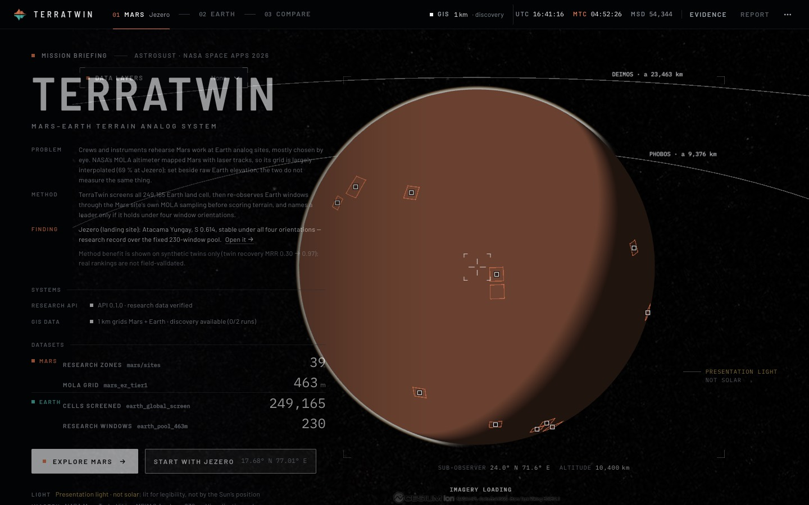
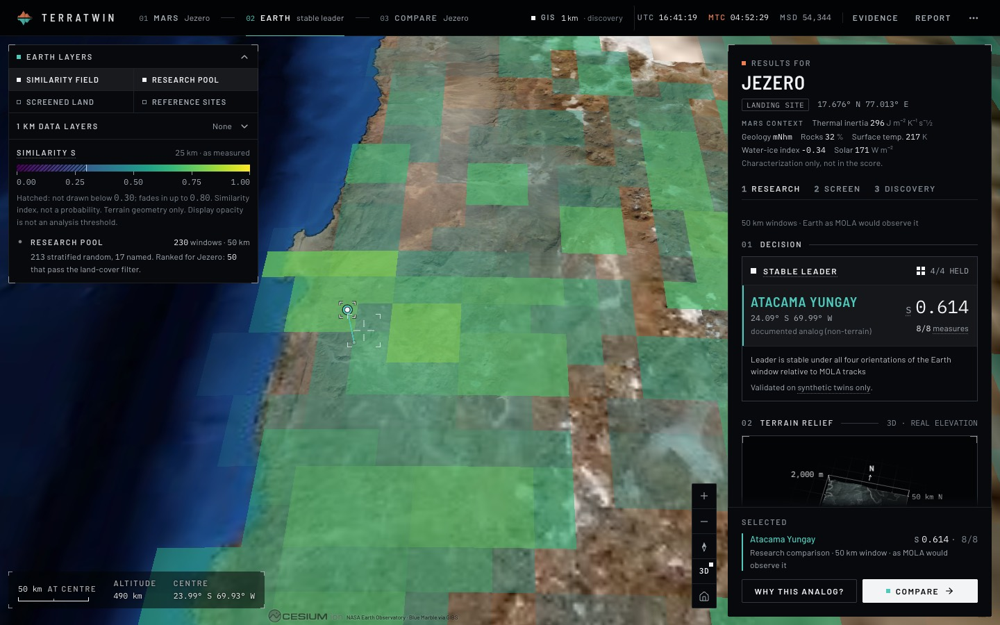
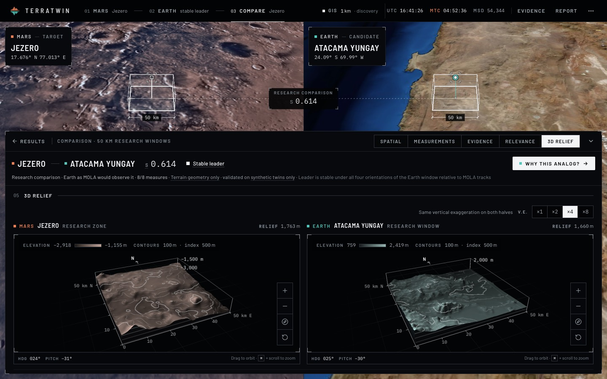
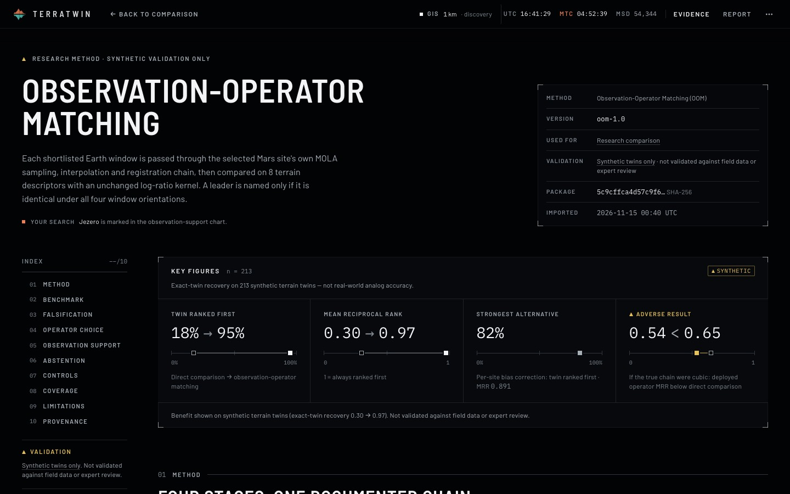
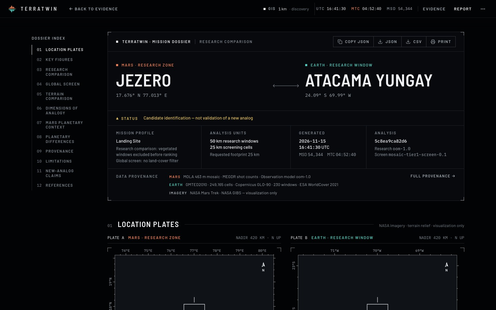

TerraTwin
Finding Earth's terrain twins of Mars — compared the way Mars was actually measured.
For Jezero crater, a whole-Earth search puts two windows in north-west China ahead of the classic Atacama analog.
- Challenge
- Identify Earth Locations that Analog the Permanent Moon Base Locations and Mars
- Team
- AstroSUST
- Live app
- https://terratwin-five.vercel.app

At Jezero, 69 % of the Mars grid is interpolated
Mars analog sites on Earth are mostly chosen by eye and reputation. NASA's MOLA altimeter mapped Mars along laser tracks. Comparing that grid with raw Earth elevation compares two different measurements.
Observe Earth the way MOLA observed Mars
Observation-Operator Matching (OOM), in five steps.
- 01
Screen
249,165 Earth land cells, 25 km, against the Mars target
GMTED2010 - 02
Refine
50 km windows for the shortlist; vegetated ground removed
Copernicus GLO-90 · ESA WorldCover - 03
Re-observe
Earth seen through the site's own MOLA sampling, interpolation, registration
NASA MOLA MEGDR counts · USGS MOLA mosaic - 04
Score
8 multiscale descriptors: slope, relief, roughness, Hurst exponent
Roughness at 926 m / 2.3 km / 9.3 km - 05
Decide
A leader only if stable in all four orientations; otherwise a tie
4 window orientations
- Mars
- NASA MOLA MEGDR 128 ppd counts (PDS) · USGS MOLA 463 m mosaic
- Earth
- GMTED2010 · ESA Copernicus DEM GLO-90 · ESA WorldCover 2021
Jezero: a tie in north-west China, ahead of Atacama
Research pool alone (fixed 230 windows): Atacama Yungay is the stable leader, S 0.614, 4/4 orientations.
Place names are approximate, read from the coordinates by the team. The Qaidam Basin is independently proposed as a Mars analog (Xiao et al. 2017, Earth-Science Reviews 164). TerraTwin makes no novelty claim.

Where the analogy holds, and where it breaks
Mars · Jezero17.68° N 77.01° E
Earth · S 0.78137.06° N 86.21° E
Earth · S 0.69337.29° N 97.51° E
Atacama Yungay: aridity index < 0.0001 (hyper-arid) · Köppen BWh (hot desert)

Terrain geometry as MOLA observes it. Cold, arid, bare ground.
The Xinjiang window is permafrost terrain; Jezero shows no shallow-ice signal. Gravity, pressure, atmosphere and radiation differ on any Earth site. Geology and process are not evaluated.
What is established, and what is not yet
True twin found first · uncorrected, then with OOM
Benchmark on 213 synthetic terrain twins

- 0.300.97mean reciprocal rank
- 175 / 0twins improved / ranked worse
- 98.9 %named leader correct; ties hold the twin 35/35
- 0 of 6vegetated controls pass the land-cover gate
- 0.54 < 0.65adverse test kept visible: cubic gridding, OOM worse
- Validation against field data or expert review
- Benefit is shown on synthetic twins only
- Similarity is terrain geometry only
Analyse any Mars coordinate, export the dossier
Analog-site selection teams, terrain and hazard algorithm testers, field-campaign planners, students.
Terrain record, six planetary-context factors, global screen, and an on-demand discovery run (1–6 min).
Exportable characterization dossier (JSON / CSV / print) with provenance and limitations.

Validation against field data and expert review: not yet done.
DATANASA MOLA MEGDR 128 ppd counts (PDS) · USGS MOLA 463 m mosaic · MGS TES thermal inertia and rock abundance · Mars Odyssey GRS · SWIM · USGS SIM 3292 · NASA Mars Trek and GIBS imagery · GMTED2010 · ESA Copernicus DEM GLO-90 · ESA WorldCover 2021